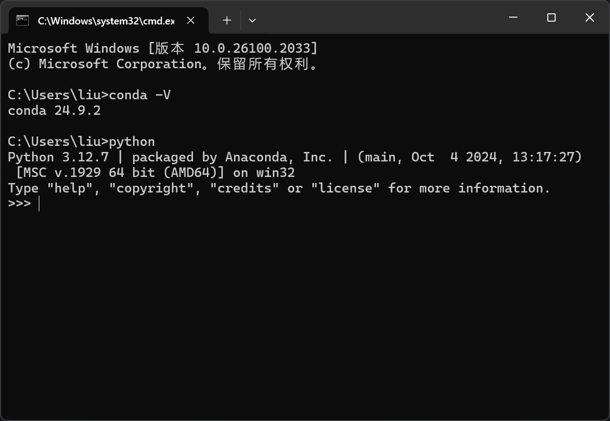
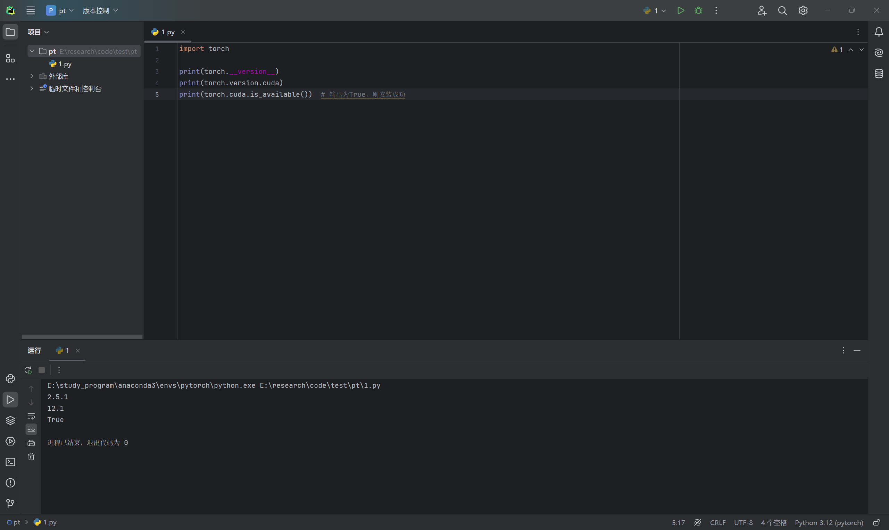
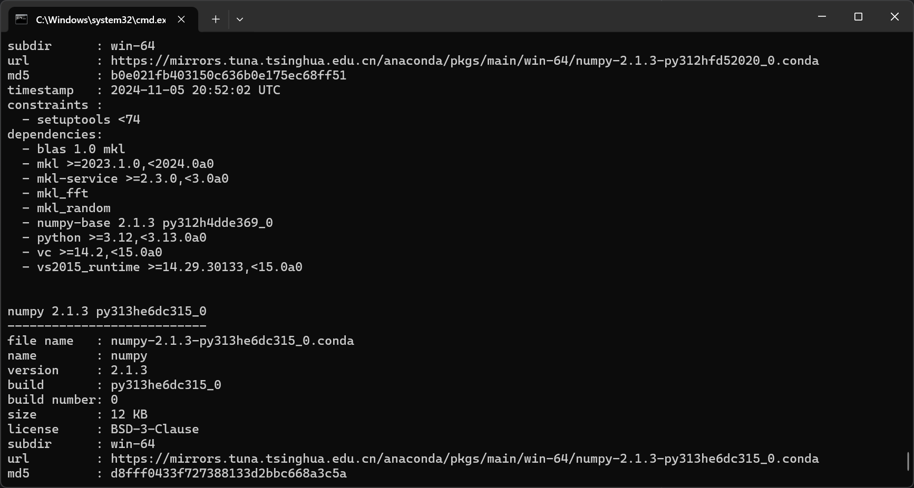
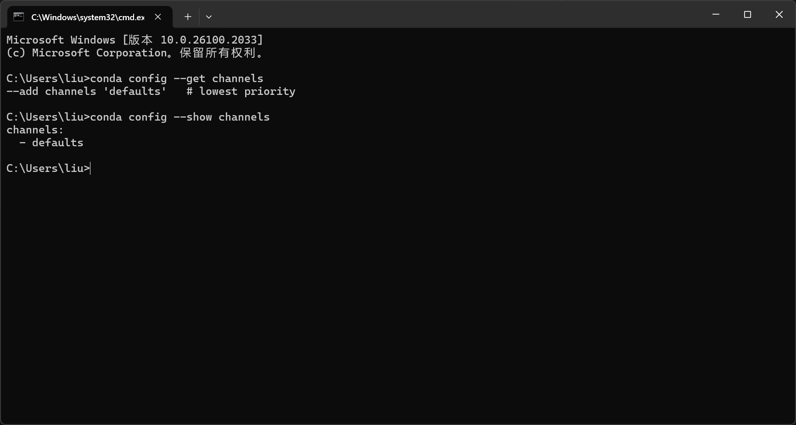
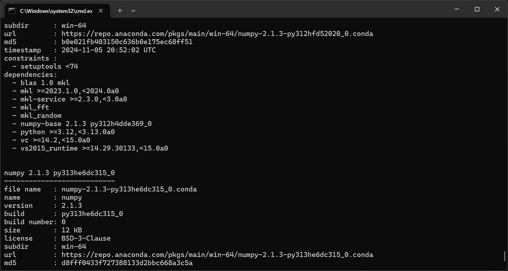

# Anaconda
这里博主选择 Anaconda 管理 python，注意安装后的系统变量 Path 中应该有：
E:\study_program\anaconda3 | |
E:\study_program\anaconda3\Scripts | |
E:\study_program\anaconda3\Library\bin |
cmd 测试：

# Pytorch
# 版本确认
我们要适配的版本如下：
-
显卡型号 & Nvidia 驱动版本
Nvidia 驱动官网（填入你的显卡型号即可）
-
Nvidia 驱动版本 & CUDA 版本
Nvidia CUDA 官网（往下拉到
*Table 3* *CUDA Toolkit and Corresponding Driver Versions*） -
CUDA 版本 & cuDNN 版本
Nvidia cuDNN 官网（tarball 就是 zip 压缩包，按照 CUDA 版本选择下载即可）
-
Pytorch 版本 & Python 版本
torchvision github 官网（依照着创建 python 虚拟环境）
-
Pytorch 版本 & CUDA 版本
Pytorch 官网（选择环境后获得指令，conda 中激活虚拟环境后运行指令）
# 安装
我们依次安装了：
- Nvidia 驱动：这个很常用，打游戏、做视频时也有其登场
- CUDA：NVIDIA 推出的并行计算平台和 API 模型，它使显卡可用于图像渲染和计算以外的目的，例如通用并行计算。
- cuDNN：CUDA 的扩展库，专门针对深度神经网络中的基础操作提供高度优化的实现方式，例如卷积、池化、规范化以及激活层的前向和后向过程。cuDNN 可以大大提高深度学习模型在 GPU 上的运行效率。
- Python 虚拟环境：使用 anaconda 创建时留意一下 python 版本
- Pytorch：用于深度学习工作
# 测试

# Anaconda 源配置
跟着操作后博主执行以下指令查看 python 包的源链接：
conda search numpy --info |
结果既有清华源，也有 repo.anaconda.com 的：
https://repo.anaconda.com/pkgs/main | |
https://repo.anaconda.com/pkgs/r | |
https://repo.anaconda.com/pkgs/msys2 |
我怎么知道具体安装时，conda 选择了哪个源啊？
—— 最后经查阅资料，博主打开 Anaconda Navigator ，删除了三个 repo.anaconda.com 源，问题解决。
在 Navigator 删除三个源后，我们进行以下测试：
- 测试一
.condarc 内容：
channels: | |
- defaults | |
show_channel_urls: true | |
default_channels: | |
- https://mirrors.tuna.tsinghua.edu.cn/anaconda/pkgs/main | |
- https://mirrors.tuna.tsinghua.edu.cn/anaconda/pkgs/r | |
- https://mirrors.tuna.tsinghua.edu.cn/anaconda/pkgs/msys2 | |
custom_channels: | |
conda-forge: https://mirrors.tuna.tsinghua.edu.cn/anaconda/cloud | |
pytorch: https://mirrors.tuna.tsinghua.edu.cn/anaconda/cloud |
此时检测结果：

注意：此时我们运行：
conda config --get channelsconda config --show channels结果是这样

尽管与很多现有简中教程不符，但是确实 url 地址是且仅是清华源
- 测试二
.condarc 内容：
channels: | |
- defaults | |
show_channel_urls: true |
此时检测结果：
